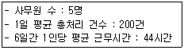
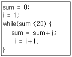
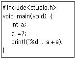

사무자동화산업기사 (2016-03-06 기출문제)
1과목: 사무자동화 시스템
1. 다음 중 분산 데이터베이스의 특징이 아닌 것은?
- 자원의 공유가능
- 처리효율의 향상
- 신뢰성 증대
- 통신비용의 절감
(정답률: 77%)

2. 다음 중 사무자동화의 사회적 배경요인이 아닌 것은?
- 정보화 사회로의 변화
- 컴퓨터 및 통신기술의 발달
- 노동인구의 고령화 및 고학력화
- 생산부문의 합리화, 자동화에 부응한 기업구조의 변화
(정답률: 61%)
3. 매장에서 제품을 살펴본 뒤 실제 구매는 온라인 등 다른 유통 경로로 하는 것을 일컫는 용어는?
- 전자옥션
- 온라인경매
- 아이쇼핑
- 쇼루밍
(정답률: 81%)
4. WYSIWYG에 대한 설명으로 옳은 것은?
- 출판물의 입력과 편집, 인쇄 등의 전 과정을 컴퓨터화한 전자 편집 인쇄 시스템이다.
- 디지타이즈된 사진을 자유자재로 편집할 수 있는 환경을 말한다.
- 전문지식이 없는 사람도 컴퓨터를 사용할 수 있도록 개발 된 환경이다.
- 사용자가 화면으로 보는 모습 그대로 출력되어 나오는 편 집 환경이다.
(정답률: 77%)
5. 메인 컴퓨터의 개입 없이 스마트폰, MP3 플레이어 등과 같은 포터블 장치 간 동작될 수 있도록 수정된 USB규격을 무엇이라 하는가?
- OTAP
- OTG
- OTP
- OAP
(정답률: 66%)
6. 일반적인 스프레드시트 프로그램에서 수행할 수 있는 기능이 아닌 것은?
- 셀 단위의 연산이 가능하다.
- 대량의 데이터 속 데이터 질의 언어(SQL)를 사용할 수 있다.
- 간단한 표와 같은 문서 작성이 가능하다.
- 함수를 사용하여 합, 평균 등의 수식을 처리할 수 있다.
(정답률: 81%)
7. 다음 중 데이터베이스의 특징과 거리가 먼 것은?
- 실시간 접근성(real time accessibility)
- 계속적인 변화(continuous evolution)
- 동시 공유(concurrent sharing)
- 의사결정지원(decision support system)
(정답률: 72%)
8. 다음 중 사무자동화(OA) 응용프로그램의 종류가 아닌 것은?
- Spreadsheet
- DBMS
- Windows
- Word-processor
(정답률: 80%)
9. 컴퓨터의 핵심 부품인 중앙처리장치 중 제어장치의 구성요소가 아닌 것은?
- 명령 레지스터
- 프로그램 카운터
- 메모리 주소 레지스터
- 데이터 레지스터
(정답률: 60%)
10. 사무자동화 수행방식 중 하향식(top-down) 접근방식의 특징에 해당하는 것은?
- 경영자가 요구하는 최적의 시스템을 구축할 수 있는 방식 이다.
- 기업의 최하위 단위부터 자동화하여 그 효과를 점차 증대 시키는 방식이다.
- 점진적인 사무자동화의 주진으로 기본 조직에 거부 반응 이 최소화된다.
- 시행착오가 빈번하여 전체적인 추진 시행에 어려움이 크다.
(정답률: 78%)
11. 컴퓨터 네트워크에 연결된 파일 수준의 데이터 저장 서버로 서로 다른 네트워크 클라이언트에 데이터 접근 권한을 제공하는 시스템은?
- NAS
- FDD
- HDD
- SAMBA
(정답률: 72%)
12. 데이터의 생성 양, 주기, 형식 큼이 기존 데이터에 비해 매우 크기 때문에, 종래의 방법으로는 수집, 저장, 검색, 분석이 어려운 방대한 데이터를 의미하는 개념은?
- 빅데이터
- 데이터마트
- 데이터웨어하우스
- 네트워크 데이터베이스
(정답률: 86%)
13. 경영정보시스템(MIS)의 일반적인 구성요소 중 MIS의 본부와 같은 역할들 하는 서브시스템은?
- 의사결정 서브시스템
- 프로세스 서브시스템
- 정보통신 서브시스템
- 인터넷 관리 서브시스템
(정답률: 69%)
14. 사무자동화의 궁극적인 목적에 적합하지 않은 것은?
- 사무 부문의 지적 생산성 향상
- 사무 부문의 질적 향상
- 사무 부문의 전산화
- 사무 부문의 비용 절감
(정답률: 45%)
15. 정보는 저장되었다가 필요한 경우에 언제든지 찾아내어 이용되어야 하는데 자료 저장기기로서 적합하지 않은 것은?
- 마이크로필름
- 하드디스크
- 광디스크
- POS 시스템
(정답률: 79%)
16. 입출력 장치를 제어하는 I/O 프로세서가 입출력이 완료된 것을 CPU에게 알려줄 때 어떤 기능을 사용하는가?
- 인터럽트
- 큐 호출
- 스풀링
- 태스크
(정답률: 54%)
17. 사무자동화의 이점에 해당되지 않는 것은?
- 단순하고 기계적이거나 반복적인 작업들로부터 야기되는 싫증과 회의감이 해소된다.
- 비용이 절감된다.
- 작업환경이 쾌적해진다.
- 컴퓨터를 이해할 필요가 없어진다.
(정답률: 90%)
18. 사무자동화시스템의 효과 중 정성적 평가방법에 해당되지 않는 것은?
- 사무환경 개선에 따른 업무 만족도
- 사무처리 기계화에 의한 근무 향상
- 사무처리의 정확성 및 의사결정의 신속화
- 사무자동화에 따른 전체 비용의 절감
(정답률: 66%)
19. 퍼스널컴퓨터(PC) 운영체제(OS) 종류가 아닌 것은?
- MacOS
- Windows
- Oracle
- Linux
(정답률: 76%)
20. 다음 중 일괄처리(Batch Processing)에 적합한 것은?
- 항공기 예약 업무
- 수도요금 계산업무
- 증권매매 업무
- 공장 자동제어 업무
(정답률: 85%)
2과목: 사무경영관리 개론
21. 다음 [보기]의 조건으로 계산한 CMU법(실적기록법)에 의한 작업 건당 처리시간은?

- 8.4분
- 9.6분
- 10.8분
- 11.0분
(정답률: 61%)
22. 무선설비, 전가/전자기기 등에서 발생하는 전자파가 인체에 미치는 영향을 고려하여 전자파 인체보호기준 등은 어느 법령이 정하는 바에 따르는가?
- 국가정보화기본법령
- 개인정보보호법령
- 저작권법령
- 전파법령
(정답률: 83%)
23. 사무분류의 원칙 중 대분류에서 중분류, 중분류에서 소분류, 다시 소분류에서 세분류 등과 같이 단계를 세분화하는 방법은?
- 총합의 원칙
- 점진의 원칙
- 근접의 원칙
- 일관성의 원칙
(정답률: 81%)
24. 다음 중 사무관리의 시스템적 접근방법이 아닌 것은?
- 관리정보시스템
- 사이버네틱스 사고방법
- 사무시스템, 기계시스템, 자료처리시스템, 통신기구 등을 포함
- 사무 실체의 작업적 방법
(정답률: 72%)
25. VDT 증후군 예방법이 아닌 것은?
- 작업환경과 노무관리 측면을 개선한다.
- 단말기 조작 시 바른 자세를 유지한다.
- 작업휴식에 대한 가이드라인을 준수한다.
- 컴퓨터 작업시간은 1일 총 8시간 미만 작업을 한다.
(정답률: 72%)
26. 다음 중 사무관리의 기능에 해당되지 않는 것은?
- 경영활동의 보조기능
- 경영관리의 도구
- 급여획득을 위한 활동
- 조직체의 각 활동을 통합하는 기능
(정답률: 79%)
27. 사무량 측정 방법 중 기록 양식과 기입 방법만 정확하게 관리 된다면 매우 우수한 측정 방법에 해당하는 것은?
- 표준시간 자료법
- 워크샘플링법
- 시간 연구법
- 실적 기록법
(정답률: 75%)
28. 저작권법에 의한 프로그램 보호관리에서 컴퓨터프로그램 저작물의 정의로 옳은 것은?
- 특정한 결과를 얻기 위하여 컴퓨터 등 정보처리처리능력 을 가진 장치 내에서 직접 또는 간접으로 사용되는 일련의 지시, 명령으로 표현된 창작물
- 저작물이나 부호, 문자, 음성, 영상 그 밖의 형태의 자료 의 집합물
- 소재의 선택, 배열 또는 구성에 창작성이 있는 편집물
- 소재를 체계적으로 배열 또는 구성한 편집물로서 개별적으로 그 소재에 접근하거나 그 소재를 검색할 수 있는 창작물
(정답률: 67%)
29. 사무작업의 효율화를 위한 사무원칙이 아닌 것은?
- 집중화의 원칙
- 분산화의 원칙
- 사무량평균화의 원칙
- 전체성의 원칙
(정답률: 42%)
30. 현대 과학적 사무관리의 3S가 아닌 것은?
- 표준화(standardization)
- 신속화(speedization)
- 간소화(simplification)
- 전문화(specialization)
(정답률: 68%)
31. 사무계획을 세울 때 고려해야 할 사항이 아닌 것은?
- 사무 처리 방식의 결정
- 필요 정보의 확정
- 사무량 예측
- 사무실 면적
(정답률: 76%)
32. 사무 조직의 형태 중 라인 조직(line organization)의 장점이 아닌 것은?
- 단순하고 이해하기 쉬움
- 결정과 집행이 쉬움
- 전문가 양성이 용이
- 책임 소재 명확
(정답률: 66%)
33. 사무분석의 기법 중 사무공정 분석에 관한 내용이 아닌 것은?
- 사무흐름의 표준화
- 사무서식의 분석 및 개선
- 결재권한의 합리화
- 사무작업시간의 적정화
(정답률: 39%)
34. 행정업무의 효율적 운영에 관한 규정 중 헌법, 법률, 대통령령, 총리령, 부령, 조례, 규칙 등에 관한 문서에 해당하는 것은?
- 공고문서
- 민원문서
- 법규문서
- 지시문서
(정답률: 75%)
35. 사무조직을 설계하는 사무관리자의 조직 원칙과 가장 거리가 먼 것은?
- 목적의 원칙
- 기능화의 원칙
- 집중화의 원칙
- 책임, 권한의 원칙
(정답률: 47%)
36. 중앙기록물관리기관의 장이 기록물의 체계적, 전문적 관리 및 효율적 활용을 위하여 표준을 제정, 시행해야할 사항이 아닌 것은?
- 전자기록물의 관리체계 및 관리항목
- 기록물관리 절차별 표준기능
- 기록물 종류별 관리기준 및 절차
- 기록물 종류별 분류기준 및 절차
(정답률: 52%)
37. 사무실 색재 조절요령 중 가장 적합하지 않는 것은?
- 책상, 사무용품, 벽 등은 되도록 자극성이 적은 색을 사용한다.
- 사무실벽의 아래 부분은 윗부분에 비해 명도가 높은 색을 사용한다.
- 사무실의 활기를 조장하기 위해서는 자극성이 높은 색을 사용한다.
- 사무실벽의 윗부분과 아래 부분은 가능한 한 명도의 차를 적게 한다.
(정답률: 65%)
38. 다음 중 전자문서교환(EDI)에 관한 설명으로 틀린 것은?
- 컴퓨터로 표준화된 전자문서를 작성하여 통신망을 통해 상대방에게 전송할 수 있다.
- 재입력 과정 없이 다음 업무처리에 즉각 활용할 수 있다.
- EDI는 거래당사자가 컴퓨터로 읽을 수 있는 서로 합의된 표준화된 자료이다.
- EDI는 표준양식으로 즉시 판독이 가능한 부호화된 형태이다.
(정답률: 59%)
39. 정부에서 국가기관 등의 국가정보화 추진과 관련된 정책의 개 발과 건강한 정보문화 조성 및 정보격차 해소 등을 지원하기 위하여 설립한 기구는?
- 한국정보보호센타
- 한국정보화진흥원
- 국가전산망진흥협회
- 한국정보통신진흥원
(정답률: 74%)
40. 다음 중 사무관리 관리층 또는 사무관리자의 역할이 틀린 것은?
- 최고경영층 - 회사설립 목적의 설정
- 중간관리층 - 예산의 편성 및 기획
- 하위관리층 - 사무 진행 계획 수립
- 사무관리자 - 부하직원 통제
(정답률: 70%)
3과목: 프로그래밍 일반
41. MFQ스케줄링 기법에 대한 설명으로 틀린 것은?
- 선점형 스케줄링 기법
- 긴 작업에 우선권을 부여
- 다양한 특성이 혼합된 경우 유용한 스케줄링
- 새로운 프로세스는 그 특성에 따라 각각 대기 큐로 들어가게 될 때 실행 형태에 따라 다른 대기 큐로 이동
(정답률: 55%)
42. 다음 중 객체지향 언어가 아닌 것은?
- JAVA
- ADA
- C＋＋.NET
- GWBASIC
(정답률: 60%)
43. 객체지향 기법에서 객체가 메시지를 받아 실행해야 할 구체적 인 연산을 정의한 것은?
- 메소드
- 클래스
- 속성
- 인스턴스
(정답률: 76%)
44. 고급언어를 기계어로 바꾸는 역할을 하는 것은?
- 로더
- 컴파일러
- 운영체제
- 링커
(정답률: 76%)
45. 생성함수(constructor)에 관한 설명으로 옳은 것은?
- 특정 객체의 생성 시 초기화 처리를 행하는 역할을 한다.
- 특정 객체가 다른 객체를 생성하고자 할 때 사용되는 메시지(message) 형태의 특수한 함수이다.
- 특정 객체의 생성 시에 다른 객체의 생성을 억제하는 역할을 한다.
- 특정 객체가 자신을 재귀적 호출(recursive call) 형태로 다시 호출하여 객체를 자동 생성하고자 할 때 사용되는 특수한 함수이다.
(정답률: 36%)
46. 주석(Comment)의 제거, 상수 정의 치환, 매크로 확장 등 컴파일러가 처리하기 전에 먼저 처리하여 확장된 원시프로그램을 생성하는 것은?
- Preprocessor
- Linker
- Loader
- Cross compiler
(정답률: 74%)
47. 언어번역 프로그램에 해당하지 않는 것은?
- 컴파일러
- 인터프리터
- 로더
- 어셈블러
(정답률: 61%)
48. "A plus (B * C)"를 전위(PREFIX) 표기법으로 옳게 표현한 것은?
- plus A * B C
- A B C * plus
- plus * A B C
- C B A * plus
(정답률: 66%)
49. C언어에서 사용하는 기억클래스의 종류가 아닌 것은?
- Automatic Variable
- Register Variable
- Message Variable
- Static Variable
(정답률: 64%)
50. 전자계산기의 중앙처리장치(CPU) 속도와 입출력장치 속도의 차를 해결하기 위한 장치는?
- Buffer Memory
- Cache Memory
- Channel
- SRAM
(정답률: 45%)
51. C 언어에서 while 문이 수행될 때, 중괄호로 둘러싸인 while문의 몸체는 몇 번 수행되는가?

- 1
- 3
- 6
- 20
(정답률: 62%)
52. 구조적 프로그래밍과 거리가 먼 것은?
- GOTO문
- 순차실행문
- 선택실행문
- 반복실행문
(정답률: 61%)
53. 재배치 형태의 기계어로 된 프로그램을 묶어서 로드 모듈로 만드는 것은?
- Tracer
- interpreter
- Loader
- Linkage Editor
(정답률: 74%)
54. 변수의 형이 결정되는 바인딩 시간은?
- 실행 시간
- 번역 시간
- 언어 정의 시간
- 언어 구현 시간
(정답률: 56%)
55. 언어의 번역과 바인딩 관점에서 나머지 언어와 성격이 다른 언어는?
- ALGOL
- FORTRAN
- LISP
- COBOL
(정답률: 59%)
56. 다음 C 프로그램의 실행 결과 출력되는 값은?

- 11
- 12
- 13
- 14
(정답률: 69%)
57. 언어의 구문 요소 중 주석(Comment)에 대한 설명으로 옳지 않은 것은?
- 프로그래머가 코드 해석을 용이하게 할 수 있다.
- 대부분의 프로그래밍 언어에서 각각의 주석 형식은 달라 도 주석을 허용한다.
- 프로그램이 동작하는 동안 값이 수시로 변할 수 있는 기억장치의 한 장소를 추상화한다.
- 프로그램 문서화의 중요한 부분이다.
(정답률: 69%)
58. 선언문을 전혀 사용하지 않는 언어는?
- LiSP
- COBOL
- C
- FORTRAN
(정답률: 61%)
59. 이항 연산자 연산에 해당하지 않는 것은?
- AND
- NOT
- OR
- XOR
(정답률: 81%)
60. 하향식 파싱 기법에 대한 설명으로 틀린 것은?
- 파스 트리의 루트로부터 시작하여 파스트리를 만들어가는 방식이다.
- 입력 문자열에 대해 루트로부터 왼쪽 우선 순으로 트리의 노드를 만들어간다.
- 생성 규칙이 잘못 적용될 경우 문자열을 다시 입력으로 보내는 반복 강조 방법을 사용한다.
- 주어진 문장을 좌측에서 우측으로 한 문자씩 읽은 문자에 대해 우측 우선 유도과정에서 다양한 생성규칙의 문자열 을 찾는다.
(정답률: 52%)
4과목: 정보통신 개론
61. OSI 7 계층에서 각 계층의 프로토콜 데이터 유닛(PDU)을 잘못 나타낸 것은?
- 데이터링크계층 - 프레임(Frame)
- 네트워크계층 - 블럭(Block)
- 전송계층 - 세그먼트(Segment)
- 세션계층 - 메시지(Message)
(정답률: 60%)
62. 다음 중 전송 회선의 분류에서 유도매체가 아닌 것은?
- Twisted-pair cable
- Coaxial cable
- Optical Fiber
- Air
(정답률: 75%)
63. 다음 중 OSI 7계층 참조모델에서 중계기능, 경로설정 등을 주로 수행하는 계층은?
- 네트워크 계층
- 응용 계층
- 데이터링크 계층
- 표현 계층
(정답률: 59%)
64. LAN의 매체 접근 제어 방식 중 Token Passing 방식에 사용되는 Token의 기능으로 맞는 것은?
- 채널의 사용권
- 노드의 수
- 전송매체
- 패킷 전송량
(정답률: 46%)
65. 정보통신시스템의 구성 요소에 대한 설명으로 거리가 먼 것은?
- CCU, FEP는 통신 제어 장치이다.
- MODEM은 변복조 장치이다.
- DTE는 데이터 에러 감시 장치이다.
- DSU는 신호 변환 장치이다.
(정답률: 58%)
66. 다음 중 데이터 회선종단장치와 관련이 없는 것은?
- DCE
- DTE
- MODEM
- DSU
(정답률: 43%)
67. 전송제어 문자 중에서 수신된 정보 메시지에 대한 부정적인 응답의 의미를 가진 것은?
- ACK
- ENQ
- DLE
- NAK
(정답률: 71%)
68. 다음 중 교환방식에 관한 설명으로 틀린 것은?
- 회선교환방식은 회선에 융통성이 요구되거나 메시지가 짧은 경우에 적합하다.
- 데이터그램 패킷교환방식은 부하가 적거나 간헐적인 통신 의 경우에 적합하다.
- 패킷교환방식은 코드 및 속도 변환이 가능하다.
- 가상회선 패킷교환방식은 패킷 도착순서가 고정적이다.
(정답률: 37%)
69. 다음 중 ISDN의 기본 액세스 인터페이스는?
- B＋2D
- 2(B＋D)
- 2B＋D
- B＋D
(정답률: 67%)
70. MHS(Message Handing System)에 대한 설명으로 바르지 않은 것은?
- MS는 메시지를 축적하는 사서함 기능을 갖는다.
- 사용자간의 메시지를 송수신 하는 기능을 갖는다.
- MHS는 UA, MTA, MS 등으로 구성된다.
- 신호변환 및 정보처리가 가능하다.
(정답률: 62%)
71. 꼬임선(Twisted-pair line)의 특징으로 맞지 않는 것은?
- 전기적 간섭현상을 줄이기 위해서 균일하게 서로 감겨있 는 형태의 케이블이다.
- 하나의 케이블에 여러 쌍의 꼬임선들을 절연체로 피복하여 구성한다.
- 다른 전송매체에 비해서 거리, 대역폭 및 데이터 전송률 면에서 제한적이지 않다.
- 가격이 저렴하고 설치가 간편한 이점을 가진다.
(정답률: 62%)
72. 패킷교환방식에 관한 설명으로 적합하지 않은 것은?
- 가상회선 방식과 데이터그램 방식이 있다.
- 아날로그 데이터 전송에 최적화되어 있다.
- 속도, 프로토콜 및 코드 변환이 가능하다.
- 장애발생시 대체경로 선택이 가능하다.
(정답률: 65%)
73. 정보통신 시스템의 구성요소 중 정보전송계의 요소가 아닌 것은?
- 신호변환장치
- 전송회선
- 중앙처리장치
- 통신제어장치
(정답률: 67%)
74. 다음 중 무선 랜(Wireless LAN)의 표준규격으로 옳은 것은?
- IEEE 802.1
- IEEE 802.3
- IEEE 802.11
- IEEE 802.15
(정답률: 59%)
75. 데이터 교환방식 중 에러제어가 제공되지 않는 것은?
- 메시지 교환방식
- 데이터그램 패킷 교환방식
- 회선 교환방식
- 가상회선 패킷교환방식
(정답률: 46%)
76. 다중화" 방식 중 Time Division Multiplexing 에 대한 설명으로 옳은 것은?
- Bandwidth의 이용도가 높아 고속 전송에 용이하다.
- 전송속도가 낮은 Sub-Channel의 신호를 서로 다른 주파 수 대역으로 변조한다.
- Asynchronous Data만을 Multiplexing하는데 사용한다.
- Sub-channel간의 상호간섭을 방지하기 위하] 완충지역으로 Guard Band가 필요하다.
(정답률: 37%)
77. 다음 중 서비스에 따른 정보통신의 분류에 해당되지 않는 것은?
- 음성전화통신
- 화상 및 영상통신
- 멀티미디어 통신
- 광케이블 통신
(정답률: 70%)
78. 프리젠테이션(presentation) 계층에서 제공되는 기능은?
- 흐름제어
- 에러제어
- 데이터 압축
- 분산 데이터베이스 액세스
(정답률: 56%)
79. 송/수신이 동시에 가능하지 않은 전송방식은?
- 반이중방식
- 전이중방식
- 군별2선방식
- 4선방식
(정답률: 75%)
80. 다음 중 한번에 2개의 비트를 전송할 수 있는 신호레밸을 가지 고 있을 때 재널용량은 얼마인가? (단, 대역폭은 3100Hz이고, 채널 상에 잡음은 없는 것으로 가정한다.)
- 3100bps
- 6200bps
- 9300bps
- 12400bps
(정답률: 55%)